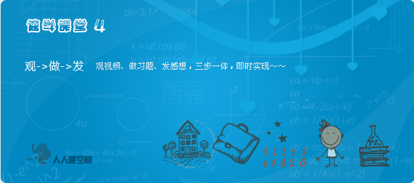

电子备课
电子书包
教务管理
速学课堂
互动学习

Springs Best Accessories
The 7 key trends for the season b2
HAHAHAHAAH HAHA haha OHOH
THINK EVERY DAY
Okay okay okay okay
scrip jquery ue seo
adsa adsa adsa adsa
adsaadsa
five five
five five ue five